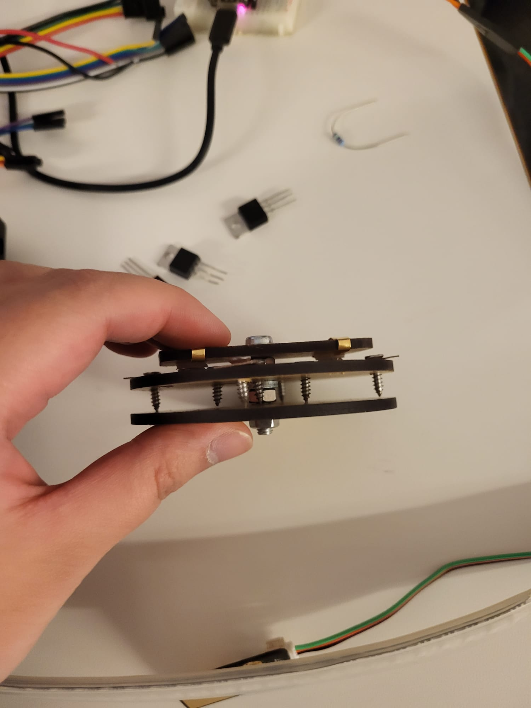
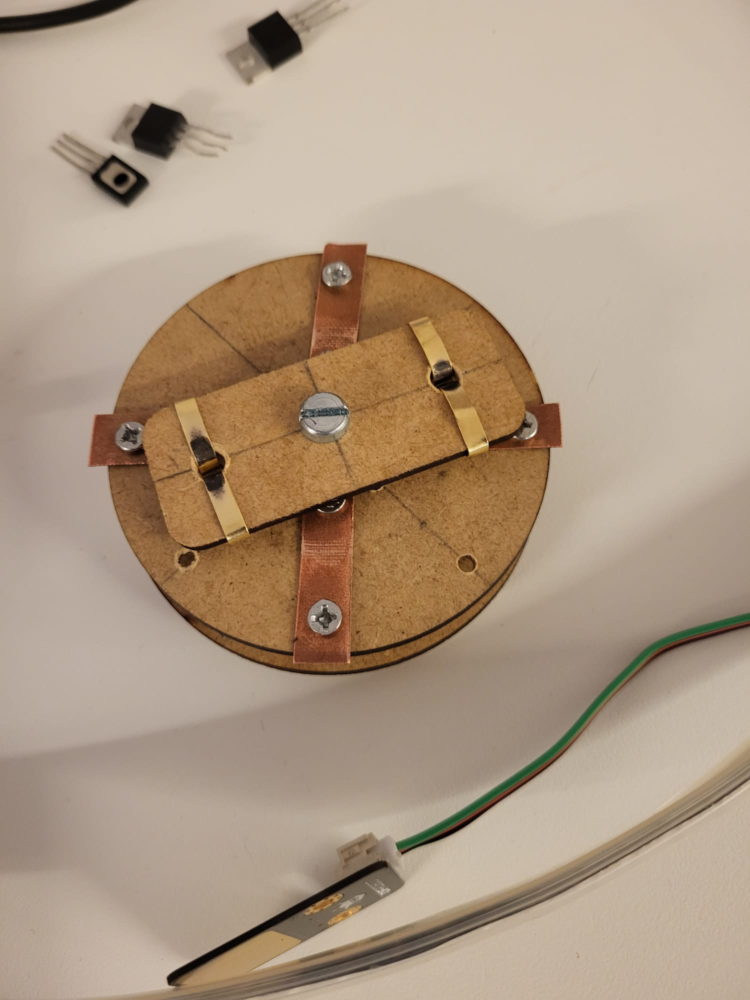
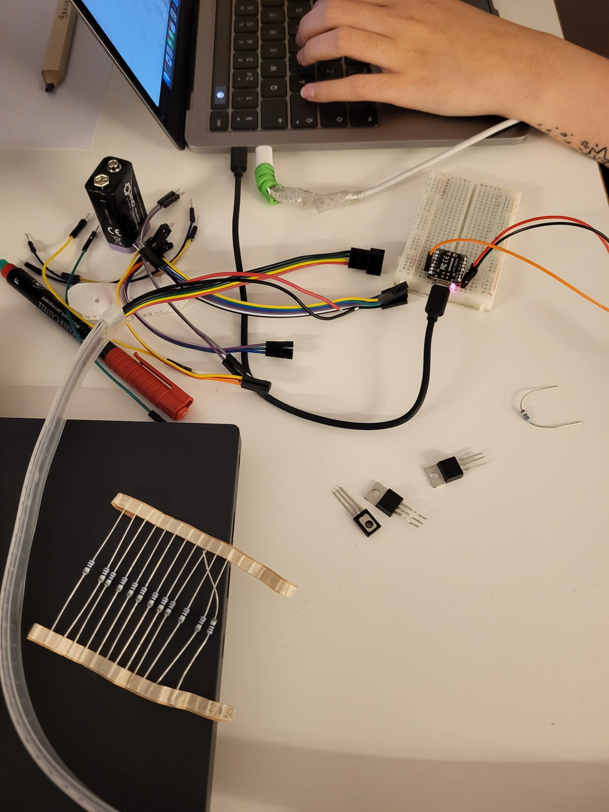

Specuative design of home lighting in when co-living with fungi
Colaborated with Jiashu Sun, Lucky Hyosun Kim, Stella HuynhVideo Prototype | Design Process Document
What would a "smart" home look like if it is more like an ecosystem instead of control system?
How can a home become a co-inhabited environment sharted by human and non-human life?
Design Concept
We wanted to reimagin a home lighting system that lets the household bond with non-human beings and mirror an ecological system, rather than a complete human-centered one.
Our deisgn focuses on fungi as the co-inhabited non-human entity, building on it's bioluminesence (light-producing organism) property and mycelial network (underground fungal webs that connect and send signals between fungi) The speculative system is form from a colony of hypothetic color-changing bioluminesent mushroom, where when there is a stimulus, the signal travels through the connection and they respond with a soft glow.

Illustration of the design concept
This is still smart home system, but the "smartness" is not based on sensor optimization for efficiency and convenience. Instead, it borrows fungi's intelligence, from how mycelial network sense, relay, and response to their environment.ss
Syetem and Interaction Design
The video prototype shows how the full system would be like in a home setting. The mushrooms are "planted" along the walls throughout the house. When a persone engage with the mushrooms, other mushrooms response and forms a light trail in the dark.
There are many ways for a person to interact with the mushrooms and we do not want to limit to one gesture. Tapping/padding as one of the gesture choosen as it mirrors how people tap/pad wild mushrooms before picking them to help them release and spread spores. As we also want to explore speculative interactions that make engagement more tactile and embodies, a rotation gesture is used to engage with the speculative color-changing aspect.
Physical Protoype
We build a prototype to demonstrate the physical and tactile interaction of the design. Arduino, touch sensor, color-chaing LEDs, and a custom rotation sensor are used to simulate how the gestures relays the signal through the network to lit up the mushrooms.



For the mushroom figure, we tried out different materials, including bioplastic and recycled plastic, which we ended up with recycled worble plastic that allow flexible molding (with the help of clay molds) and let light shine through to resemble the look of a bioluminescent mushroom.

Physical prototype with decorations